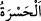
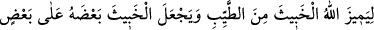
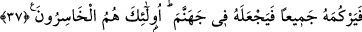

ileri gelenlerinden on iki kişi olup her biri her gün askere onar deve kesip yediriyordu.
“Şüphesiz inkâr edenler” Rasûlullah (s.a.v.)’e düşmanlıklarından “mallarını, Allah
yolundan” Allah’ın dîninden ve Rasûlü’ne uymaktan “alıkoymak” insanları menetmek
“için harcıyorlar.” Çünkü bu yol, Allah Teâlâ’nın mükâfatına ulaşmanın yoludur. O’nun
cennetinde ebedî kalmak, ancak O’nun emrettiği şekilde yaşayanlar içindir. Mallarının
tamâmını “daha da harcayacaklar.”
Belki de âyette ilk olarak harcadıkları bildirilen mallar, Bedir’de harcadıkları malları
haber vermektedir. Daha sonra harcayacakları ise gelecekte, yani Uhud’da
harcayacakları malları bildirmektedir. Onlar bu uğurda devamlı olarak tekrar tekrar
mallarını harcadıklarından bu iki harcama ile tek şeyin kastedilmiş olması da
muhtemeldir. Buna göre onların daha da harcayacaklarının bildirilmesi, gelecekle ilgili
olmaktan ziyâde te’kid için olur. Böylece bu iki harcama bir olmuş olur. Şu kadar var ki
ilki onların harcamaktan maksadının ne olduğunu açıklamak, ikincisi ise bunun sonunun
olduğunu beyan etmek için sevk olunmuştur.
“Ama sonunda bu” mallar, maksadlarına erişemeden ellerinden çıktığı için “onlara
yürek acısı” pişmanlık ve gam “olacak ve” her ne kadar bundan önce müminlerle
kâfirler arasındaki harp bir lehde bir aleyhde olagelse de “en sonunda mağlup
olacaklardır.”
Mallarını harcamaları sonunda onlar için yürek acısı olduğundan mübalağa için
mallar, hasretin bizzat kendisi gibi tavsif edilmiştir.
Haddâdî der ki: “
”, açmak mânâsına gelen “keşf” kelimesinden alınmıştır. Buna
göre âyetin mânâsı şöyledir: “Sonra bu infakın neticesinde onlara hasret ve pişmanlık
verecek bir durum ortaya çıkar.”
“Kâfirler” küfürlerinde ısrar edenler “ise cehennemde toplanacaklardır.” başka
yere değil, oraya sevk olunacaklardır.
37. Bu, Allah’ın murdarı temizden ayırması ve murdarları üst üste koyup hepsini
yığarak cehenneme atması içindir. İşte onlar ziyana uğrayanların tâ kendileridir.
“Bu, Allah’ın murdarı” kâfirler topluluğunu “temizden” müminler topluluğundan
“ayırması ve murdarları üst üste koyup hepsini yığarak” yani onları yığıp kalabalık
hâline gelene kadar toplayarak, bazısını bazısının üzerine yığarak/istifleyerek hepsini
“cehenneme atması içindir.”
“İşte onlar” murdar olan topluluk, tamamıyla “ziyana uğrayanların tâ kendileridir.”
Çünkü hem mallarını hem de canlarını kaybetmişlerdir.